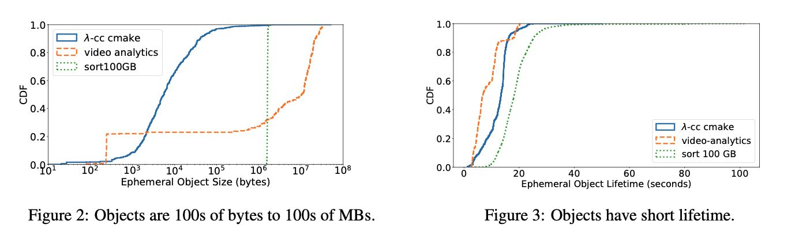
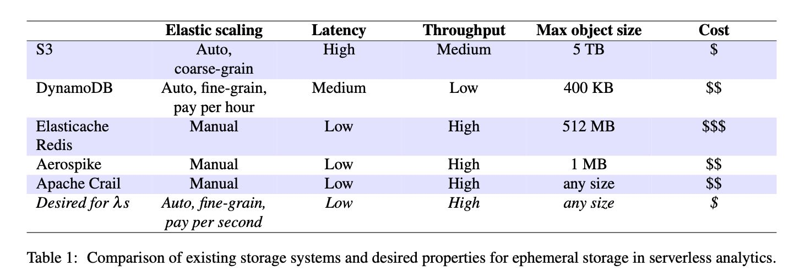
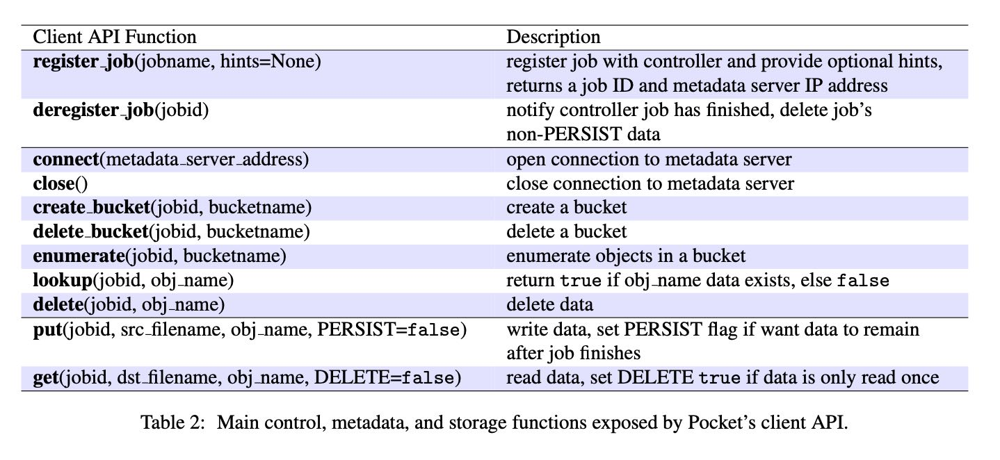
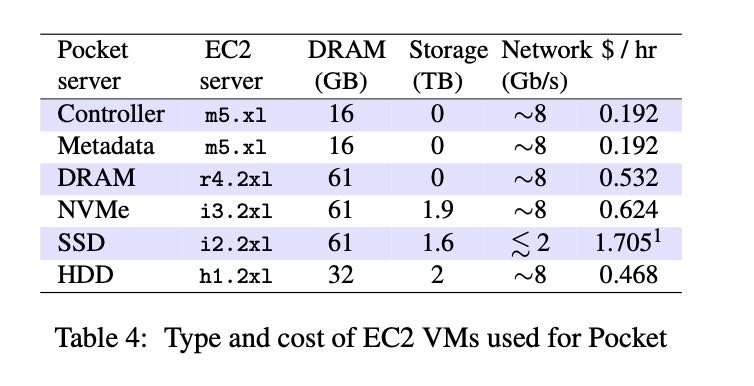

Pocket: Elastic Ephemeral Storage for Serverless Analytics
https://www.usenix.org/conference/osdi18/presentation/klimovic
https://github.com/stanford-mast/pocket
这篇文章不是发在SIGMOD而是OSDI上，所以设计目标是通用eph-storage服务。
1. 问题背景
这篇文章的背景是，现在有各种serverless platform, 大家可以在上面写serverless function. 但是function之间如果先要交换数据的话，尤其是临时数据的话会很有问题，还有想比如MapReduce中间这个shuffle过程完全没有必要写在HDFS上。这些交换数据的特点是：
- 不需要考虑高可用，如果失败的话可以重新进行计算。
- 交换数据根据应用会偏重吞吐和延迟，而现有存储系统没有平衡两者的(Redis重延迟,S3重吞吐)，所以根据情况需要将交换数据放置在不同介质上。
- 既然function都是serverless，那么这个存储系统也需要考虑弹性，目前Redis(ElasticCache)是做不到的，许多存储系统其实需要人工进行介入。
Ephemeral Storage Requirements
- High performance for a wide range of object sizes
- Automatic and fine-grain scaling
- Storage technology awareness
- Fault-(in)tolerance
下图可以看到eph object size变化非常大(100B~100MB)，并且生命周期很短(<100s)

目前还没有这类针对Eph storage设计的存储系统，看完Pocket实现细节之后，我觉得可能Apache Crail还是比较适合做distributed eph storage的，就是弹性不够。如果弹性上来的话，cost可能是可以下来的。

2. 整体结构
这个东西整个结构看上去和GFS/HDFS非常类似，只不过针对eph storage不用考虑storage server上面的高可用，然后在选择storage server上可以使用特定算法平衡吞吐和存储空间。整个系统架构如下：
- Controller 可以认为是GFS master，但是它只负责注册/销毁Job以及进行扩缩容。存储对象的metadata都放在了metadata server上面。
- Metadata server. 管理存储对象的metadata信息，对象按照64KB(可配置）进行拆分为block，然后选择不同的storage server进行存储。为了简化设计，每个Job下面产生的对象只会让一个metadata server来负责管理。
- Storage server. 实际存储对象block的服务器，根据Job特点可以选择不同类型的实例。
- HA策略：controller暂时没有做HA, 理论上可以使用master-slave来做；metadata server是写WAL到NFS上故障恢复可以恢复状态；storage server则没有必要做HA。
Pocket offers high throughput and low latency for arbitrary size data sets, automatic resource scaling, and intelligent data placement across multiple storage tiers such as DRAM, Flash, and disk. The unique properties of Pocket result from a strict separation of responsibilities across three planes: a control plane which determines data placement policies for jobs, a metadata plane which manages dis- tributed data placement, and a ‘dumb’ (i.e., metadata- oblivious) data plane responsible for storing data. Pocket scales all three planes independently at fine resource and time granularity based on the current load. Pocket uses heuristics, which take into account job characteristics, to allocate the right storage media, capacity, bandwidth and CPU resources for cost and performance efficiency. The storage API exposes deliberately simple I/O operations for sub-millisecond access latency.
整个流程大约是这样，然后API如下图：
- Job首先去Controller上注册jobid，并且获得一个metadata server地址。完成之后销毁jobid. 这个期间controller可以根据Job提供的hints进行扩容(metadata server 和 storage server). 只有这个job所有的对象metadata都由这个metadata server管理。
- Job中间可能会有许多tasks, 每个tasks可以分配bucket, 然后task将自己产生的对象放置到这个bucket下面，其他task可以enumerate bucket看到下面所有的对象。
- task可以读写某个object. 因为object size可能很大，所以期间还可能多次和metadata server进行交互选择storage server进行读写，也可以一次性分配拿到多个storage servers地址。如果blocks size = 64KB, 那么对于小对象只需要一次交互就行，这个可以进行优化。PERSIST是是否需要持久化， DELETE是读取之后是否就立刻删除。

3. 资源配置
文章里面叫做“Rightsizing Resouce Allocations”，其实包含几个问题：
- object block如何选择storage server方式
- 怎么决定storage server扩缩容
- 如何在storage server/metadata server之间做load balance.
第一个问题的解决方式是，是在job创建的时候传入hints，告诉controller这个job对于吞吐(T)和存储(C)的需求情况（或者是估算出来），以及是否延迟敏（放置在什么介质上S/storage media)。如果T/C不满足的话，那么就需要进行扩容(seconds ~ minutes)，扩容完成之后使用online-binpack方式对T/C/S进行拆解，这样每个storage server上就有一个权重（优先顺序是T/C/S). 然后将这个weight map传递给metadata server, 这样metadata sever每次分配的都是按照weight分配storage server大体就不会有错误。其实这个思想很好，就是先从总体上得到概率分布，然后实际执行时候按照这个概率分布去分配。
所有的storage server/metadata server都会将节点状态汇报给controller. 对于storage server，如果CPU/network/capacity使用率低于60%的话，那么就会销毁；如果高于80%的话那么会就会创建新的节点。对于metadata server好像没有看到扩缩容的策略，不过可能也是类似，可能在看看CPU/memory吧，因为metadata server上面没有太多持久化的东西，job/weight map应该都是在内存中的。销毁逻辑上，controller需要等待上面job全部执行完成，之后不往这个storage server/metadata server上面指派任务，等待全部完成之后再kill. 扩容的话storage server会向metaserver/controller上面注册并且定期汇报（我觉得好像不用汇报到metaserver吧？），扩容上优先使用垂直扩展而不是水平扩展（也不知道怎么可以不停机做水平扩展）
The controller monitors cluster re- source utilization by processing heartbeats from storage and metadata servers containing their CPU, network, and storage media capacity usage. Nodes send statistics to the controller every second. The interval is configurable.
When launching a new storage server, the controller provides the IP addresses of all metadata servers that the storage server must establish connections with to join the cluster. The new storage server registers a portion of its capacity with each of these metadata servers. Meta- data servers independently manage their assigned capac- ity and do not communicate with each other. Storage servers periodically sends heartbeats to metadata servers.
Pocket’s controller scales down the cluster by removing a storage server if overall CPU, network bandwidth and capacity utilization is below the lower limit of the target range. In this case, Pocket removes a storage server belonging to the tier with lowest capac- ity utilization. Pocket adds a storage server if overall CPU, network bandwidth or capacity utilization is above the upper limit of the target range. To respond to CPU load spikes or lulls, Pocket first tries to vertically scale CPU resources on metadata and storage servers before horizontally scaling the number of nodes.
controller并不主动做load balance. 对于已经分配的资源不做任何改动，只是针对将来提交的任务会在server选择上做调整，从而达到整体的balance.
我理解论文好像是系统运行最初需要选择storage server instance type，如果延迟要求低的话那么可以选择大内存的，如果比较平衡的可以选择NVMe/SSD，如果关心吞吐就搞HDD. 在内存如果整个系统还可以自动选择new allocate哪个类型的storage server那就更好了，不过也就会更加复杂吧，异构系统资源分配的确是不太好做。实验中几种instance type如下：

4. 实现细节
controller使用python编写，每个节点上的daemon也使用python使用，使用K8s Operations(kops)来启动虚拟机(metadata server/storage server).
metadata/storage server都是在Apache Crail上面改的，可能是这个东西本身就和pocket架构非常类似。用户和metadata/storage servers之间都是使用TCP/RPC进行通信，但是写入storage server storage media的时候则有区分，为了直接写介质所以使用了一些kernel bypassing的技术。
- Memory: NIO APIS
- NVMe: ReFlex(DPDK/SPDK), 11x QPS/core than linux network-storage stack.
- HDD/SSD: DPDK + libaio
我觉得在写入介质方面可以看看Apache Crail的实现 https://crail.incubator.apache.org/blog/.
看上去这个项目和Apache Crail有很大的关系，Apache Crail两个committers就是作者 Patrick Stuedi, Animesh Trivedi. https://incubator.apache.org/projects/crail.html
We implement three different storage tiers for Pocket. The first is a DRAM tier implemented in Java, using NIO APIs to efficiently serve requests from clients over TCP connections. The second tier uses NVMe Flash storage. We implement Pocket’s NVMe storage servers on top of ReFlex, a system that allows clients (i.e., lambdas) to access Flash over commodity Ethernet networks with high performance [47]. ReFlex is implemented in C and leverages Intel’s DPDK [43] and SPDK [44] libraries to directly access network and NVMe device queues from userspace. ReFlex uses a polling-based execution model to efficiently process net- work storage requests over TCP. The system also uses a quality of service (QoS) aware scheduler to manage read/write interference on Flash and provide predictable performance to clients. The third tier we implement is a generic block storage tier that allows Pocket to use any block storage device (e.g., HDD or SATA/SAS SSD) via a standard kernel device driver. Similar to ReFlex, this tier is implemented in C and uses DPDK for effi- cient, userspace networking. However, instead of using SPDK to access NVMe Flash devices from userspace, this tier uses the Linux libaio library to submit asyn- chronous block storage requests to a kernel block device driver. Leveraging userspace APIs for the Pocket NVMe and generic block device tiers allows us to increase per- formance and resource efficiency. For example, ReFlex can process up to 11× more requests per core than a con- ventional Linux network-storage stack [47].